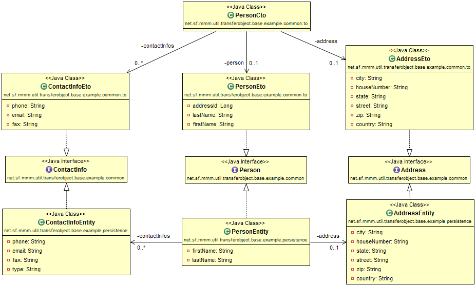

| Interface | Description |
|---|---|
| TransferObject |
This is the interface for a transfer-object.
|
| TransferObjectUtil |
This is the interface for a collection of utility functions to deal with
AbstractTransferObjects. |
| TransferObjectUtilLimited |
This is a limited subset of
TransferObjectUtil that is GWT compatible. |
| Class | Description |
|---|---|
| AbstractTransferObject |
This is the abstract base class for a
TransferObject. |
| CompositeTo |
This is the abstract base class for a composite
TransferObject. |
| DataTo |
This is the abstract base class for an
TransferObject that only contains data without relations. |
| EntityTo<ID> |
This is the abstract base class for an
DTO corresponding to a
PersistenceEntity. |
| EntityTo.PersistentEntityAccess |
Inner class to grant access to internal
PersistenceEntity reference of an EntityTo. |
TransferObjects and utilities based on
well-established concepts. PersistenceEntity often contains relations (see
OneToOne, OneToMany ManyToOne
, or ManyToMany). While a PersistenceEntity
can make use of lazy loading this is not possible in TransferObject.
Therefore you have to express which selection of your data model you want to transfer for services that load, save, update,
delete or process data. If you would add all relations to your TransferObjects
you might end up with one of the following problems:
null without a transparent concept causing
serious runtime errors.TransferObjects. To avoid a naive way of doing this, this package introduces
DTO, ETO, and
CTO. entities:

Now you could build the followingTOs:
AddressTo with the attributes from Address.ContactInfoTo with the attributes from ContactInfo.AddressWithContactInfoTo with the attributes from both Address and
ContactInfo.Address or ContactInfo (or both). TransferObjects:
AddressEto extending EntityTo with the attributes from Address.ContactInfoEto extending EntityTo with the attributes from
ContactInfo.AddressWithContactInfoCto extending CompositeTo containing AddressEto
and ContactInfoEto.persistence entities from
TransferObjects then Address and ContactInfo should be an
interfaces that centralize the JavaDoc for the attributes via the getter methods. Your EntityTo
(e.g. AddressEto) and PersistenceEntity (e.g.
AddressEntity) then both implement that interface (e.g. Address). Copyright © 2001–2016 mmm-Team. All rights reserved.